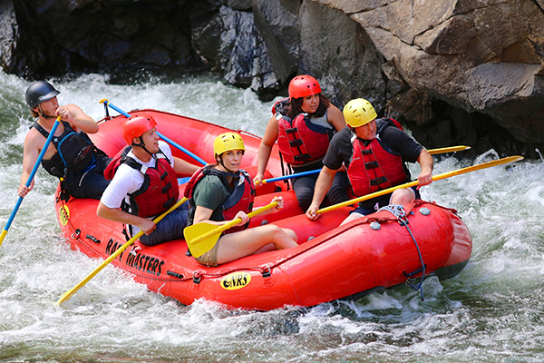

Corredeira do Rio Paranapanema
- Nível: Avançado
- Duração: 4 horas
- Idade mínima: 16 anos
O roteiro mais intenso da nossa programação. A descida passa por uma sequência de corredeiras fortes, com ondas altas e trechos que exigem remada coordenada de todo o bote. O guia dá os comandos o tempo todo, e o grupo recebe instruções de segurança e treino de remada antes de entrar no rio.
Indicado para quem já fez rafting ou quer sentir a força do rio sem meio-termo.
Reservar este passeio